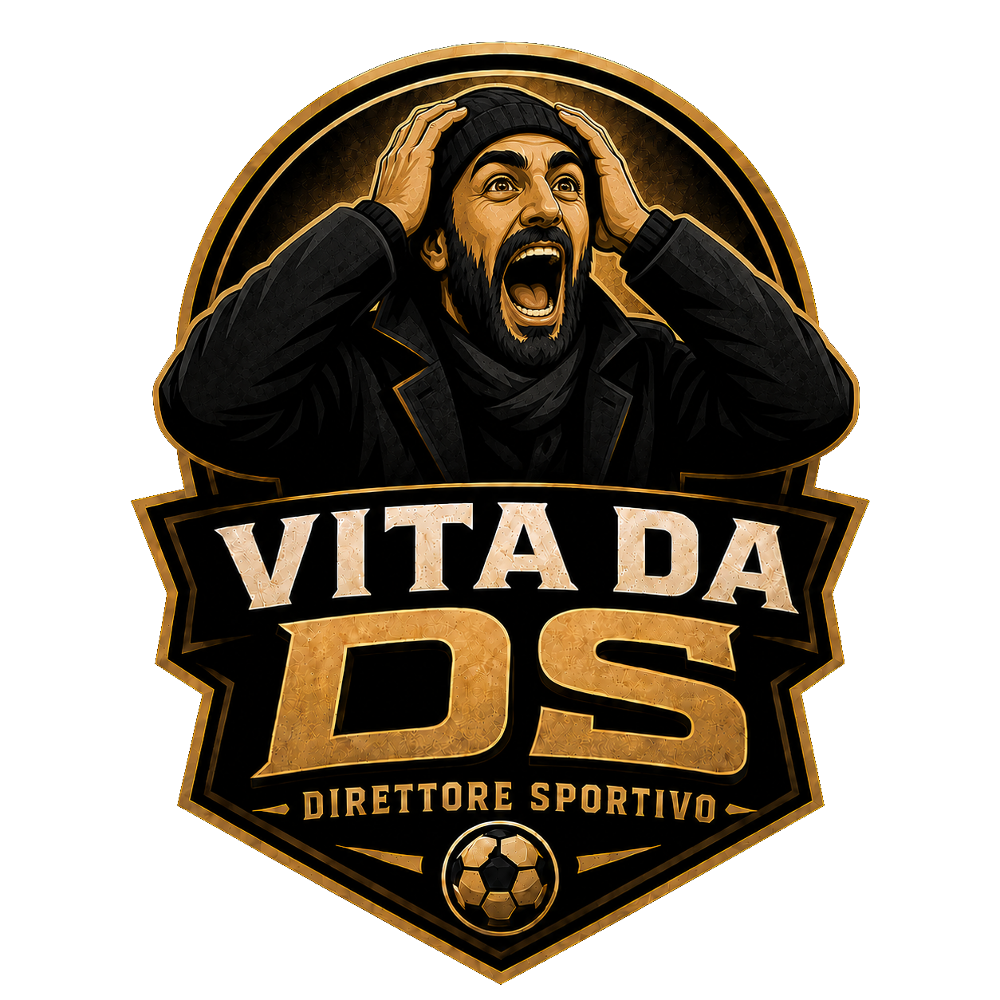

Vita da DS
IN SVILUPPO"Vita da DS" è un gioco gestionale narrativo di calcio: vesti i panni del Direttore Sportivo (DS) di una squadra e vivi la stagione dall'interno, tra scelte, pressioni e soddisfazioni.
Non è un clone di Football Manager: è un'esperienza più leggera e narrativa, dove le decisioni che prendi — su rosa, mercato, staff e interviste — influenzano morale, reputazione e risultati stagionali.
Cosa puoi fare
- Gestisci rosa, contratti e tratti caratteriali dei giocatori
- Naviga le finestre di mercato tra acquisti, cessioni e prestiti
- Assumi scout e staff, e leggi i loro report settimanali
- Vivi ogni partita con eventi, interviste e conseguenze reali sul morale
Stato del progetto
Il gioco è ancora in cantiere — torna a trovarci per gli aggiornamenti. Vuoi essere avvisato al lancio? Scrivimi.